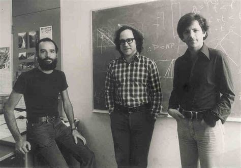
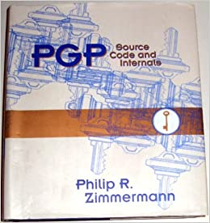
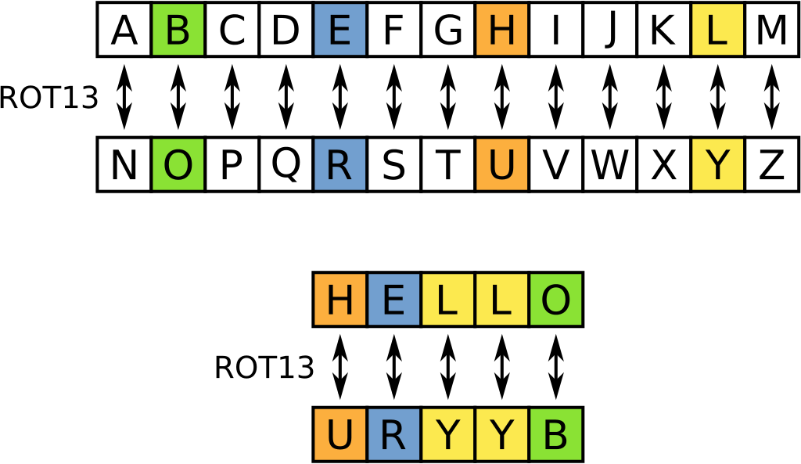
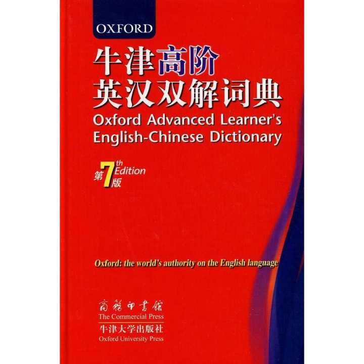
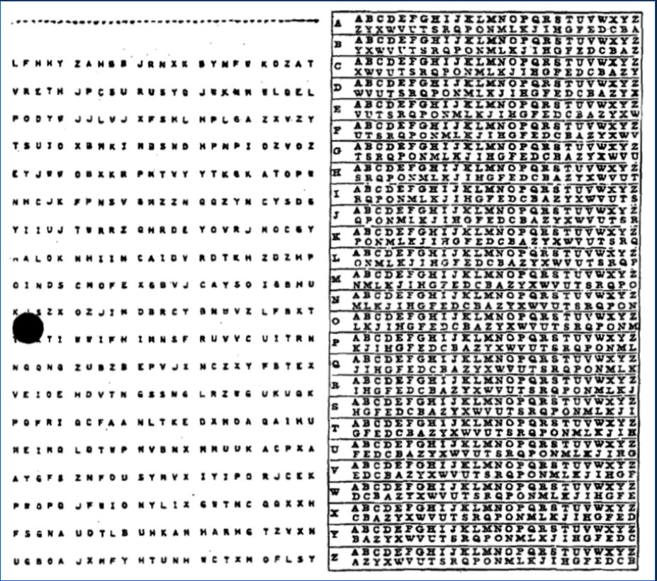
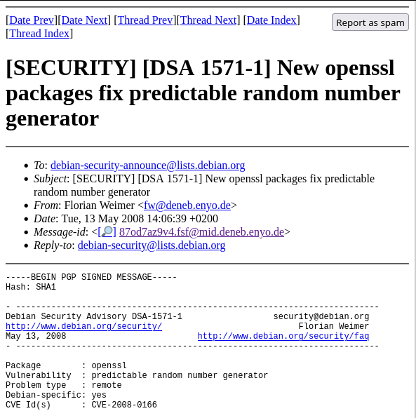
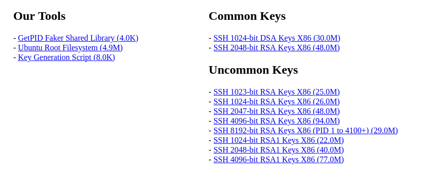

浅谈RSA算法以及公钥密码学在日常生活中的应用
1. RSA算法的背景
1974:
本科生 Ralph C. Merkle 在向自己CS244课程的教师 Lance Hoffman提交的一份提案作业当中
提出了关于在两个节点之间通过不安全的通讯线路进行安全通讯的方案。

2. RSA算法的背景
这份方案当初并没有获得Hoffman的青睐，而且他还在Merkle的作业上写道：
Project 2 looks more reasonable maybe because your description, Project 1 is muddled terribly. Talk to me about this today.
3. RSA算法的背景
1975年，斯坦福大学的教授 Martin E. Hellman 与同事 Whitfield Diffle 共同开始研究加密机制。
1976年共同发表著名论文 New Directions in Cryptogrphy
发明了 Diffle-Hellman 密钥交换协议
两人共同获得了2015年的图灵奖
4. RSA算法的背景
1977年，麻省理工学院的Ron Rivest, Adi Shamir, Leonard Adleman发表了RSA算法
提供了另外一种实现方法

5. RSA算法的背景
使用大于40位二进制密钥的加密系统在美国被认为是军需品，受到联邦政府的管制
软件上也没有成熟可用的实现
故此时还没有广泛使用
6. RSA算法的背景
1991年，Phil Zimmermann开发了第一版PGP程序并开始在网络上分发
7. RSA算法的背景
在受到美国政府的的调查后，Zimmermann将源代码出版成一本书，旨在受到美国宪法第一修正案（出版自由）的保护。
OCR技术/输入将源代码编码进电脑
使用自由分发的Gnu C编译器（GCC）将源代码编译成可执行的二进制文件。

8. RSA算法的背景
1997年，Zimmermann将PGP制定成一个公开的互联网标准，称之为OpenPGP1
Werner Koch 为GNU项目编写了兼容OpenPGP协议的GnuPG, 使用GPL。
公开密钥加密以及RSA算法终于有了易用的软件实现
9. 李四与小丽的故事
在介绍RSA等公开密钥加密（又称非对称加密）之前
密码学的背景知识，尤其是对称密钥加密，以及其与非对称加密之间的区别
10. 李四与小丽的故事
李四 \(\leftrightarrow\) 小丽
\newline
李四 \(\leftrightarrow\) 张三 \(\leftrightarrow\) 小丽
11. 李四与小丽的故事
"Hello,World!" \(\rightarrow\) "60fde……ba289" \(\rightarrow\) "Hello,World!"
12. 李四与小丽的故事

13. 李四与小丽的故事

(单词所在页码 ＋ 字母序数[A：0, Z：25]) mod 26 \(\rightarrow\) 字母
14. 李四与小丽的故事
\[ Pt &= A(26-Nd(W) \mod 26 + N(Ct) \] \[ Ct &= A((Nd(W) + N(Pt)) \mod 26 \]
15. 李四与小丽的故事
明文 \(\rightarrow^{f(x)}\) 密文 \(\rightarrow^{f^{-1}(x)}\) 明文
16. 李四与小丽的故事
\[ 69 \cdot 71 = 4899 \] \[ 999908083871821 = ? \quad \cdot \quad ? \]
17. 对称密钥加密
维吉尼亚密码 \(\rightarrow\) 一次性密码本

18. RSA的加密原理
19. RSA的加密原理
- 公钥: 就是加密方或接收方公开的密钥，默认公钥是会被窃听者获取到的。
- 私钥：需要双方自己严格保护不能泄漏给其他人。
- 目的：便是通过不安全的通讯线路建立安全的通讯连接。
20. RSA的加密原理
Deffie-Hellman协议的通信双方需要根据
彼此的公钥和自己的私钥计算出一个共同的加密密钥
密钥是不经过通讯线路
双方各自计算出来后直接开始加解密
21. RSA的加密原理
假设发送方(\(S\))和接收方(\(R\))的公钥(\(p\))和密钥(\(s\))分别为：\(S_p\),\(R_p\),\(S_s\),\(R_s\)
其中，两个密钥 \(S_s\) 和 \(R_s\) 是不公开的。
\(q\) 和 \(a\) ，其中 \(q\) 是一个质数， \(a\) 是 \(q\) 的一个原根。
\(S_s\) 和 \(R_s\) 分别是两个小于 \(q\) 的随机数，由 \(S\) ， \(R\) 两方私密保存。
22. RSA的加密原理
\(S_p\) 和 \(R_p\) 便使用双方各自的私钥和 \(a\) ， \(q\) 计算而成: \[ S_p = a^{S_s} \mod q \] \[ R_p = a^{R_s} \mod q \]
共享密钥 \(K\) 的计算方式如下： \[ K_R = S_p^{R_s} \mod q \]\[ K_S = R_p^{S_s} \mod q \]
23. RSA的加密原理
我们很容易就可以证明 \(K_R = K_S\):
\begin{align} K_R &= S_p^{R_s} \mod q \\ K_R &= (a^{S_s} \mod q)^{R_s} \mod q \\ K_R &= a^{S_s\cdot R_s} \mod q \\ K_R &= (a^{R_s} \mod q)^{S_s} \mod q \\ K_R &= R_p^{S_s} \mod q \\ K_R &= K_S \end{align}24. RSA的加密原理
第三方窃听者只掌握 \(S_p\) ， \(R_p\) ， \(a\) 与 \(q\) ，
只能通过算离散对数的方式去获得 \(S_s\) 和 \(R_s\) 。
25. RSA的加密原理
Deffie-Hellman协议需要通信双方都持有对方的公钥才可以实现加解密
如果接收方不清楚发送方的身份，便无法得到对方的公钥
无法进行解密操作
26. RSA的加密原理
RSA算法与Deffie-Hellman协议的不同之处:
RSA算法只需要用接收方的公钥便可以加密信息
接收方可以直接使用自己的私钥解密信息
在这里我们只需要分析接收方的密钥生成过程
27. RSA的加密原理
假设 \(p\) 与 \(q\) 是两个质数 ，然后他们的乘积为 \(n\) ，
计算 \(n\) 的欧拉函数： \[ \varphi (n) = \varphi (p\cdot q) \] 欧拉函数是积性函数，所以： \[ \varphi (p\cdot q) = \varphi(p)\cdot \varphi(q) = (p-1)(q-1) \] 所以： \[ \varphi (n) = (p-1)(q-1) \]
28. RSA的加密原理
再随机选择一个大于 1 小于 \(\varphi(n)\) 的整数 \(e\) , 并计算 \(e\) 对于的模反元素 \(d\) 。
模反元素是数论中的一个概念:
对于两个互质的整数 \(a\),\(n\) ，一定存在元素 \(b\) 使得:
\[ a\cdot b \equiv 1 (\mod n) \]
i.e. a与b的乘积除以n的余数为1
此时就称b是a对于n的模反元素。
29. RSA的加密原理
将(n,e)封装成公钥，(n,d)封装成私钥
密钥生成完成
30. RSA的加密原理
\(S\) 想要给 \(R\) 发送一条信息
于是他找到 \(R\) 的公钥，提取出来里面的 \(n\) 和 \(e\)
将明文 \(Pt\) 进行如下操作获得密文 \(Ct\) ： \[ Ct = (Pt)^{e} \mod n \]
将密文 \(Ct\) 发送给 \(R\) ， \(R\) 再通过自己的私钥 \((n,d)\) 对密文 \(Ct\) 进行如下的操作获得明文 \(Pt\) ： \[ Pt = (Ct)^d \mod n \]
31. RSA的加密原理
合法性和安全性证明： 即，证明 \((Ct)^d \equiv Pt (\mod n)\)
已知： \(Ct = (Pt)^e \mod n\)
故即证： $Ct = (Pt)e - kn \quad (k ∈ \mathbb{Z} $
带入，得： \(((Pt)^e - kn)^d \equiv Pt (\mod n)\) \(\quad (Pt)^{ed} - kn^{d} \equiv\)
即证： \((Pt)^{ed} \equiv Pt (\mod n)\)
32. RSA的加密原理
\(d\) 是 \(e\) 关于 \(\varphi(n)\) 的模反元素,故： \[ ed \equiv 1 (\mod \varphi(n)) \] 即： \(ed = k\cdot \varphi(n) + 1\)
代入原式： \[ (Pt)^{k\varphi(n) + 1} \equiv Pt (\mod n) \]
33. RSA的加密原理
根据欧拉定理： \[ (Pt)^{\varphi(n)} \equiv 1 (\mod n) \] 故：
\[(Pt)^{k\varphi(n)} \equiv 1^n (\mod n)\] \[(Pt)^{k\varphi(n)} \cdot Pt \equiv Pt (\mod n)\] \[(Pt)^{k\varphi(n)+1} \equiv Pt (\mod n)\]
关于 \(Pt\) 和 \(n\) 不互质情况的证明这里从略。
34. RSA的加密原理
第三方监听者拥有的信息只有接收方的公钥 \((n,e)\)
如果他想要将 \(Ct\) 转换为 \(Pt\) ，便需要通过 \(n\) , \(e\) 计算出来 \(d\) .
$ed ≡ 1 (\mod ϕ(n)) , 要先算出来 \(\varphi(n)\), 然而： \[ \varphi(n) = (p-1)(q-1) \] 所以需要算出来 \(p\) 和 \(q\) 。
35. RSA的加密原理
这个运算便是将n分解为p与q乘积的运算
当p与q足够大时，我们就可以确保我们的隐私是被安全加密的
因为攻击者攻击加密算法的手段是不实际的 (infeasible).
36. RSA的加密原理
至今为止人类成功破解的最大的RSA密钥长度是768个二进制位，232个十进制位
也就是说一个232位的两个大质数的乘积被分解为原来的两个质数。
12301866845301177551304949583849627207728535695953347921973224521517264005 07263657518745202199786469389956474942774063845925192557326303453731548268 50791702612214291346167042921431160222124047927473779408066535141959745985 6902143413 = 33478071698956898786044169848212690817704794983713768568912431388982883793 878002287614711652531743087737814467999489 × 36746043666799590428244633799627952632279158164343087642676032283815739666 511279233373417143396810270092798736308917
37. RSA的加密原理
现在的RSA密钥一般都是以1024位起步，在重要的场合使用2048位或4096位。
随着科技的发展，计算机的算力逐渐提高，人们的隐私保护意识增强，
在计算机的算力允许的条件下这个数字当然是越大越好。
而且大部分的RSA实现方法都是先使用 AES 等对称加密算法加密正文
然后使用 RSA 加密密钥，再将两者封装起来， 以节约计算成本。
38. RSA的加密原理
也有在程序开发人员的疏忽下导致RSA算法的加密失效的例子
2006年，著名的GNU/Linux发行版Debian的开发人员在使用代码自动审计工具时，错误地注释了一行代码，
恰巧这行代码就是用来确保SSH协议生成密钥时的熵足够大的。
这个错误的下场是生成的SSH密钥的熵降到了15个比特，也就是说总共只有32767个密钥会被生成。

39. RSA的加密原理
在这个漏洞被曝光后，有人在两个小时内就生成了所有的1024位密钥和2048位密钥并公布到网络上，
导致黑帽黑客利用这个漏洞大范围扫描并尝试用生成的私钥暴力侵入具有此漏洞的Debian服务器。

40. 非对称密钥的应用
非对称密钥在我们的日常生活中的使用情形十分的广泛。
从代替Telnet协议的SSH(Secure SHell)协议，到HTTPS协议。
为了避免监听者发动中间人攻击，通信的所有流量都会先加密然后通过数据传输线路，
实现通过不安全的通信线路进行安全通信的功能。
41. 非对称密钥的应用
非对称密钥加密也运用在电子邮件当中，为了防止机密或隐私信息被窃取，
通常会将电子邮件使用PGP或者GPG(GnuPG)加密，
将加密后的文本发送到对方，对方再使用自己的私钥进行解密查看。
42. 参考文献
[1] Diffie, W.; Hellman, M., New Directions in Cryptography, IEEE Transactions on Information Theory;22(6);644-654.
[2] Diffie, W.,The First Ten Years of Public-key Cryptography, Proceedings of the IEEE;76(5);560-577.
[3] Peter Kim, The Hacker Playbook 2: Practical Guide to Penetration Testing, Secure Planet LLC, 2015.
[4] Hadnagy, C.; Ekman,P., Unmasking the Social Engineer: The Human Element of Security, John Wiley & Sons, Inc., 2014.
[5] TJ O’Connor, Violent Python: A Cookbook for Hackers, Forensic Analysrs, Penetration Testers and Security Engineers, Syngress, 2012.
[6] 闵嗣鹤、严士健. 初等数论(第四版). 高等教育出版社. 2020.